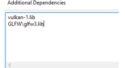

{{currentClass.Description}}
{{state.Description}}
Type: {{variable.Type}}
{{variable.Description}}
{{method.Description}}
Type: {{parameter.Type}}
{{parameter.Description}}
Type: {{method.Returns.Type}}
{{method.Returns.Description}}
Welcome to the vulkan engine wiki! This is the source for all documentation regarding the engine, code documentation, engine specific tutorials, and explanations of the different systems used by the engine.
There are a few things that will need to be setup in order to start working with the engine.
If you haven't already, Fork or download the github repository here
Make sure you have the Vulkan SDK installed, it can be found at Khronos' website here the engine was written with VulkanSDK version 1.2.135.0, if you are using a different version and run into issues try using that version of Vulkan instead. Once the Vulkan SDK is installed try running the vkcube.exe found in the VulkanSDK/1.2.135.0/Bin folder to ensure that vulkan is compatible with your computer.
Once you have vulkan installed and have verified that it runs on your computer you may need to change the path to the VulkanSDK in the project settings of the Visual Studio project. In Visual Studio go to Project>VulkanEngineProperties, to open project properties or right click VulkanEngine in the solution explorer window and click properties. Make sure that the configuration is set to All Configurations and the platform is x64. Go to ConfigurationProperties>C/C++>General and edit Additional Include Directories, check that the path to the VUlkanSDK Include folder set in Additional Include Directories matches the path on your computer. Go to ConfigurationProperties>Linker>General and edit Additional Library Directories, check that the path to the VUlkanSDK Lib folder set in Additional Library Directories matches the path on your computer.
Due to file size the folder with the test models for the engine was unable to be uploaded to github, this folder should be given seperately if you do not have access to this folder there will be separate instructions belot.
Paste the models folder into the project directory the project directory is the folder with all of the .ccp and .h files (VulkanEngine\VulkanEngine\VulkanEngine).
If you do not have access to the models folder, you must make your own. Go to the project directory and create a folder named "models", the project directory is the folder with the .cpp and .h files (VulkanEngine\VulkanEngine\VulkanEngine). Add a model to test to the folder you just created. The model must be a .obj file as other model types are not currently supported. Now that the model has been added we have to change the EntityManager class to use the new model, open EntityManager.cpp in VisualStudio. Go to the LoadMeshes method and change the path to the last model to the path to the model you just added ("models/testmodel.obj").
Make sure you are set to build in x64 and run the project you should be able to run without errors.
Here are some basic steps to get you started with our Engine and with Vulkan as well!
In our engine, we have included most of the dependencies you would otherwise need to download and set up yourself, but you will still need to download the Vulkan SDK on your machine. To find it, click here. In our engine, we use Vulkan SDK version 1.2.135, but as long as you use the newest version, you should be fine. Proceed with installation and be mindful of where it installs. My Vulkan SDK is in my C drive in a folder called VulkanSDK. I suggest you save it to the same place to make things easier for yourself while setting up your project!
Time to check if Vulkan was installed correctly! This next step will ensure that installation was successful and your graphics card and driver supports Vulkan. Pro tip: make sure your graphics card driver is FULLY up to date.
Go to the directory of which you installed Vulkan, open the Bin folder, and click on vkcube.exe. Do you see this?
If you see this cube spinning about, you are on the right track! If not, be sure your drivers are up to date and that your graphics card is supported by Vulkan
Open up the visual studio project! Most of this should be set up, but I will go through it just in case! Right click on the project and open up properties.
Make sure all configurations and x64 are selected up top! This is so we are using the same dependencies whether we are in release or debug mode.
Head to C/C++ - > General and select Additional Include Directories.
Select Edit. Here you will see our additional include directories. For you, There should be one for your Vulkan SDK include path and one that says $(SolutionDir)Include. $(SolutionDir)Include lets us get all of the files we need from that folder
If the path you created for your Vulkan SDK is different, please either change the path or edit it here.
Let’s take a look! Please note this is just an explanation of each of these libraries!
| GLFW | This library helps us create a window! GLFW supports Windows, Linux, and MacOS! By using this, we can benefit from the cross platform advantages of Vulkan |
| GLM | Linear algebra operations so we do not have to recreate them ourselves |
| STB | used to load images like textures! |
| TinyObjLoader | loads vertices and faces from an OBJ file. Much easier than creating one ourselves! |
If Visual Studio tells you any of these files are not found, go back into Additional Include Directories and add the path of the file that’s giving you trouble. Visual studio wasn’t recognizing I had the STB folder in my directory, so I added the absolute path. For example : C:\Users\Name\Documents\VulkanEngine\include\stb. You should not have to do this though.
Here is the rest of our setup. This is already set up for you, but if you are interested in the complete setup, stay tuned!
Head to Linker -> General, and select edit on Additional Library Directories. Add the file paths for the Vulkan and GLFW object files:
Here you should include the Lib folder for VulkanSDK and the lib folder for GLFW. When you first download GLFW, your Lib folder is not separate and may look like this path instead:
Next, head to Linker -> Input, and click “edit” on Additional Dependencies. Enter the names of the Vulkan and GLFW object files!
Finally, head to C/C++ -> Language Standard and make sure the the compiler supports C++17 features:
Great job! You’re done! Now make sure you’re always compiling in 64 bit mode since that’s what we set up for. This is found at the top of your screen in Visual Studio:
You’re all set!
Your Visual Studio project should be all set up! If you run it now, it will not run and it will tell you it’s missing the file models/room.obj. The reason for this is because we could not include the obj file in the repo.
Open the path of where you are storing our engine and create a folder called “models.” Do the same for a “textures” folder, too.
Inside of it, we will put the model. We are using "Viking Room" by nigelgoh for the sake of this tutorial but any OBJ should do. Here is the OBJ file and material. As you can guess, the OBJ file goes in the models folder and the material goes in the textures folder. If you are testing for us, please try as many 3d models as possible!
Run again and see what happens! You should see something like this :
Congratulations! You have now set up our engine and are ready to go!
{kind=link}